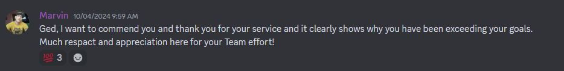
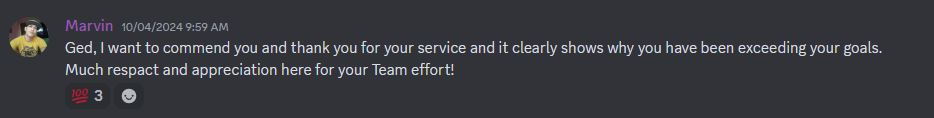

Ged Galleros
Summary
Experienced virtual assistant with 5+ years of experience. Responsible for both LinkedIn marketing strategy development and comprehensive administrative support. Proficient in developing targeted marketing strategies, generating leads, and optimizing campaigns through A/B testing. Skilled in managing incoming calls, emails, and appointments, as well as conducting research, maintaining contact lists, and handling general office administration tasks. Proven ability to foster relationships, deliver exceptional customer service, and manage social media platforms effectively.
Education
- Bachelor of Science in Information Technology
Work Experience
May 2017 - January 2020
SixEleven Global Services and Solutions
VIRTUAL ASSISTANT
- Prioritized incoming emails and messages, managed multiple email accounts,
handled phone calls professionally, took messages, scheduled callbacks, and
promptly addressed inquiries.
- Coordinated and scheduled meetings using calendar management tools such as
Google Calendar or Outlook, sent invitations and agendas, and maintained accurate
and accessible contact lists for team members
January 2020 - April 2022
Sparkling and Beyond Cleaning Services
ADMINISTRATOR/CUSTOMER SUCCESS MANAGER
- Guided new customers about the services offered, ensuring clear understanding of
product inclusions and exclusions
- Established and maintained strong relationships with customers to understand
their needs, challenges, and goals.
- Addressed customer issues before they escalated, frequently conducting regular
check-ins to ensure satisfaction.
May 2022 - July 2024
Special Coaching Academy
Linkedin Marketing Specialist
- Assisted coaches with LinkedIn by implementing email outreach strategies and
creating targeted campaigns tailored to various industries.
- Assisted coaches with LinkedIn by implementing email outreach strategies and
creating targeted campaigns tailored to various industries.
- Assisted coaches with LinkedIn by implementing email outreach strategies and
creating targeted campaigns tailored to various industries.
- Assisted coaches with LinkedIn by implementing email outreach strategies and
creating targeted campaigns tailored to various industries.
June 2024 - February 2025
Scale My Cleaning Business
Sales Development Representative/Appointment Setter
- Helped cleaning companies by providing them quality appointment by doing cold
call.
- Helped clients build their sales pipeline and close more deals
- Helped managed customer’s clients by setting up a CRM to streamline the sales
process
Awards and Certifications
 

Other